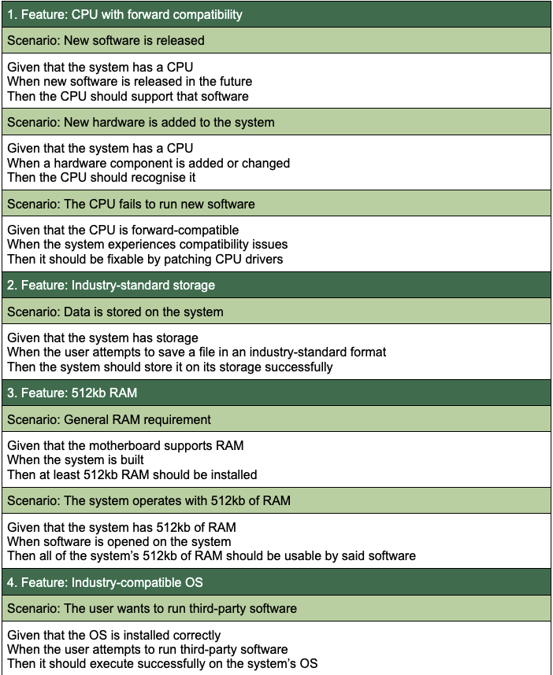
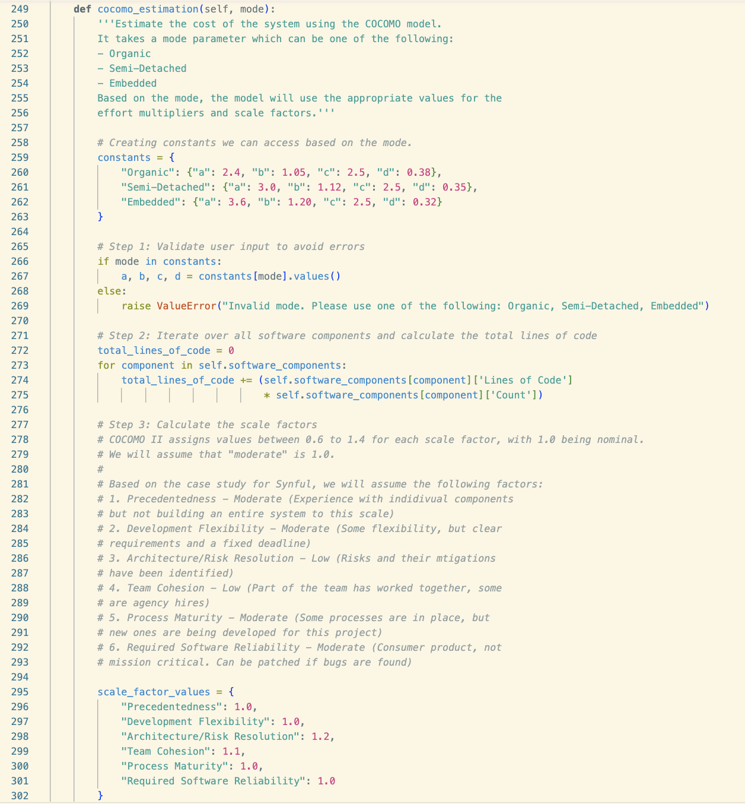
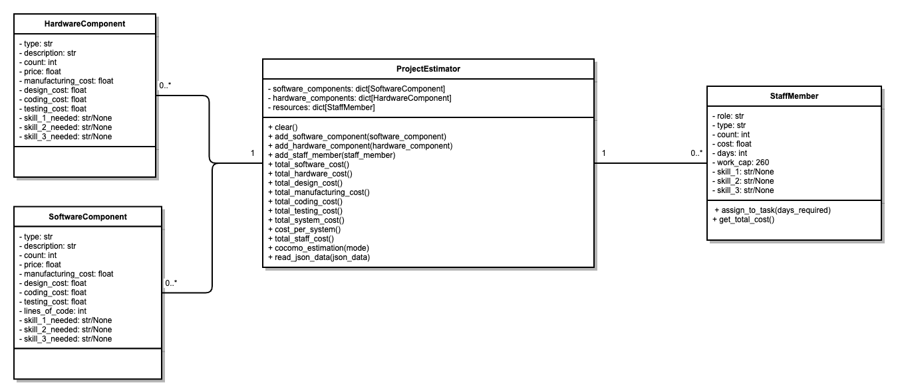
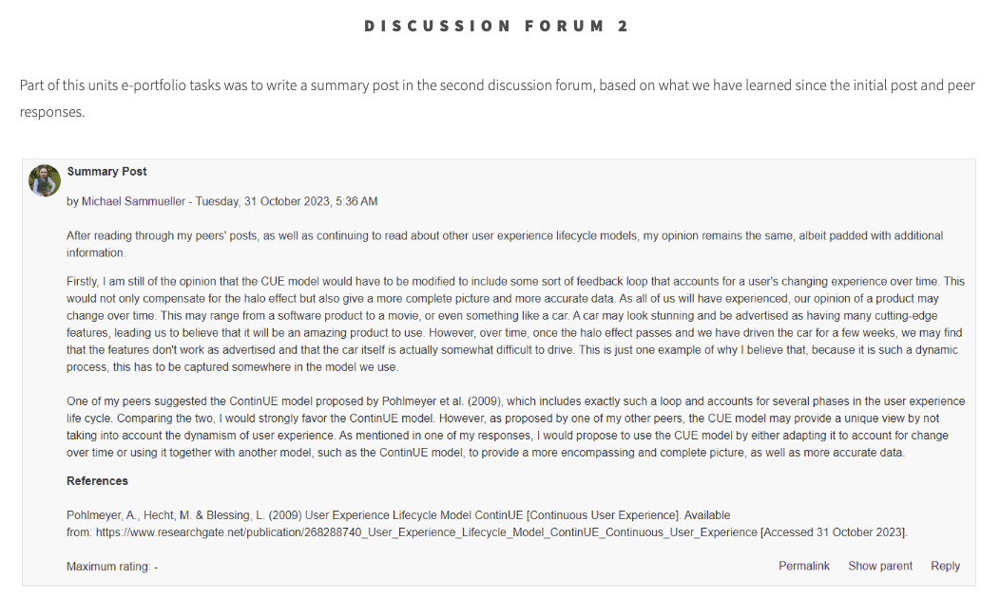

Final Reflection
Word Count: 1,038
Introduction
The “Software Engineering Project Management” module allowed me to study project management, a field I had limited prior exposure to. Being a simulator engineer, my professional work focuses mainly on programming and data processing, while others manage the projects that I will later integrate into the simulators. To finally learn the methods, theories, and concepts related to project management, and putting them into practice, was a welcome introduction to the world of project management.
Based on my twelve individual reflections for each unit, this final reflection is intended to summarise my experience of studying this module and working in a team for two of the three assignments.
Team Experience
I felt I was well prepared for working in a team, having done so a little earlier as part of the “Secure Software Development” module a few months ago. Based on my positive experience back then, I was looking forward to working in a team again. While there were some hurdles to overcome in the initial phases, with some team members not responding to messages or missing meetings unexcused, the team experience changed for the better a few weeks into the process.
Following the agile methodology, we formed our plans, assigned tasks to each team member, and began working on our project, revisiting our plans whenever necessary. As a team, we stressed the importance of meeting regularly to review progress and support each other. We met at least once per week, and sometimes up to three times, to polish our submissions until each one of us was satisfied with the final product. Being spread all over the globe was certainly still a challenge, with some team members living in the Middle East, one in the UK and the other one in Canada.
Personal Involvement
As part of the first assignment, my efforts were focused on Gherkin statements, as well as on the hardware and software configuration of our proposed system. After we had gathered the requirements for our system, I began studying them to craft Gherkin statements that would describe these requirements. Although Gherkin's syntax is meant to be easy and allow non-technical users to understand requirements, the fact that it is meant to be used as part of “behaviour-driven” development made it somewhat difficult to apply it to hardware components. It appears to me that Gherkin would be more applicable to describe the behaviour of software, rather than describing RAM or a computer case.
After carefully selecting individual hardware and software components to fulfill the requirements, the team realised that we would not be able to stay within budget in doing so. Due to this discovery, we decided to build two systems, one that we could sell to the public, and one that we would send to EDC to fulfill our contractual obligations. Although we worked hard on this assignment and spent countless hours going over the requirements and the resources provided to us, we all were somewhat unsure whether our assignment would be satisfactory - mainly because we exceeded the strict page limit of two pages - a limit that seemed impossible to uphold. Contrary to our concerns, our hard work paid off, as the awarded grade reflected the positive feedback we were given.
For the second assignment, I volunteered to work on the Python application, specifically focusing on the class structure, methods, and attributes. Creating a cost calculator as such is not a difficult task - however, we were asked to employ cost estimation algorithms as part of this software. Being familiar with these methodologies only in theory, it was on me to convert them into code to be used as part of our application. After conducting some research, I decided to use the COCOMO methodology to estimate the costs involved based on lines of code (LOC), as this seemed to be the most applicable. Looking at various implementations online (GeeksforGeeks, N.D.) allowed me to develop my own implementation of COCOMO.
After creating the initial class structure described in the UML class diagram, as well as the calculation and estimation methods, we had a meeting to demonstrate my code, as well as the GUI code developed by one of the other team members. Since he was also in charge of developing the JSON structure, I had to make some adjustments to my code to make it work properly with his code. After working on it for several days and patching some bugs, we were able to successfully integrate both code blocks with each other and produce a working cost estimation software.
Module Structure
Although the module itself appeared well structured and planned, the resources which we were given as part of our assignment work were confusing and sometimes did not seem to make sense at first glance. This is something we struggled with for both team assignments until we decided to contact our tutor who helped us understand what we had to do. We were told that, as long as we would clearly state our assumptions, we would be graded accordingly. This helped us to move past the initial confusion and get started with working on our second submission.
As I have come to expect with these models, the “Software Engineering Project Management” module provided an introduction into the world of project management, and slowly grew in difficulty and complexity, whilst making sure to give us some breathing space towards our assignment deadlines.
Throughout studying this module, I made sure to participate in all of the forum discussions, and to complete all formative activities such as Codio and article reviews, and record my work in my e-portfolio.
Conclusion
The experience gained whilst studying this module have helped me to grow not only as a student, but also as a member of a project management team. It has helped me to further develop my communication, planning, and programming skills by challenging me to create the Python application described above, assembling a computer system, and creating a delivery plan. I expect that this will help me in my studies and my professional life. Working in an ever-changing environment brings with it integration and implementation projects which need project managers, and this module has certainly ignited an interest in me to do such work in the future.
References
GeeksforGeeks (N.D.) Software Engineering | COCOMO Model. Available from: https://www.geeksforgeeks.org/software-engineering-cocomo-model/ [Accessed 30 November 2023].